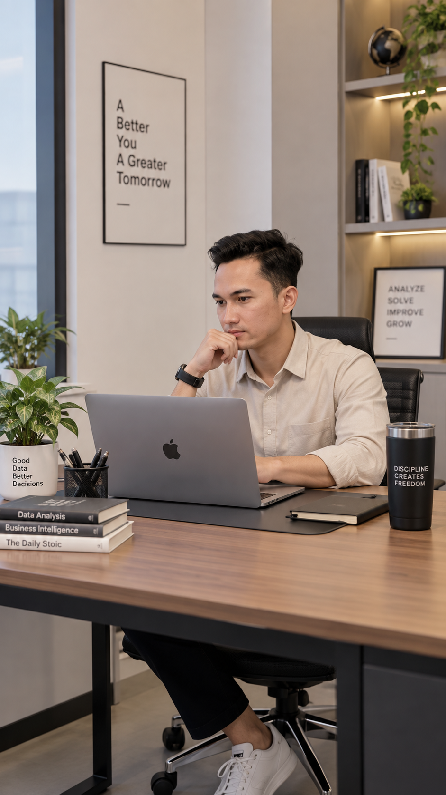

01
RETRO STORE
Apple & Technology
Penjualan produk Apple untuk kebutuhan teknologi dan perangkat digital.
→ Learn MoreHELLO, I'M
Akuntan • Data Analyst • Business Intelligence • Entrepreneur
Saat ini saya berperan sebagai Head Finance & Business Intelligence di Rumah Sakit Umum Universitas Muhammadiyah Jember dan Founder RETRO GROUP, yang menaungi tiga lini bisnis: RETRO STORE, RETR(OFFICE), dan RETRO MEDIA SOLUTION.

Founder
Three Business Lines, One Ecosystem
RETRO GROUP adalah ekosistem bisnis yang saya bangun dengan tiga fokus: teknologi, data, dan media.
Apple & Technology
Penjualan produk Apple untuk kebutuhan teknologi dan perangkat digital.
→ Learn MoreData Analytics & Business Intelligence
Jasa analisis data untuk kebutuhan skripsi, tesis, riset, bisnis, dan Business Intelligence.
→ Learn MoreDigital Media & Promotion
Jasa paid promote dan layanan promosi media untuk membantu kebutuhan publikasi dan pemasaran.
→ Learn MoreAbout Me
Saya lulusan Sarjana Akuntansi Universitas Muhammadiyah Jember dengan IPK 3,94. Karier saya berkembang dari administrasi dan accounting hingga menjadi Head Finance & Business Intelligence di lingkungan rumah sakit.
Saat ini saya mengembangkan kemampuan di bidang data analytics dan Business Intelligence menggunakan SQL, Python, Power BI, Tableau, dan Excel. Saya tertarik mengubah data menjadi informasi yang lebih mudah dipahami dan digunakan untuk pengambilan keputusan.
Experience
Pengalaman yang membentuk kombinasi Finance, Accounting, dan Business Intelligence.
Memimpin fungsi keuangan, pengelolaan arus kas, pencatatan akuntansi, pelaporan, serta pengembangan pendekatan berbasis data.
Mengelola arus kas pembangunan rumah sakit dan terlibat dalam negosiasi harga dengan rekanan.
Menangani administrasi, kesekretariatan, dan kearsipan data nasabah.
Selected Work
Beberapa project yang menunjukkan proses dari data cleaning, exploratory analysis hingga machine learning dan experimentation.
505 pengguna aplikasi langganan dari 6 negara, dianalisis menggunakan Shapiro-Wilk, Levene, independent t-test, dan Cohen's d.
Rata-rata pendapatan varian B sekitar 20% lebih tinggi dari varian A, dengan perbedaan signifikan dan ukuran efek besar.
View Project Lihat di GitHubDataset transaksi dianalisis melalui EDA, korelasi, data cleaning, RobustScaler, elbow method, K-Means, dan PCA 2D.
49.457 data lengkap dikelompokkan menjadi 6 segmen dengan karakteristik berbeda.
View Project Lihat di GitHubAnalisis 7.917 responden menggunakan statistik deskriptif, univariat, bivariat, multivariat, serta berbagai visualisasi.
Kelompok usia terbesar adalah 36–45 tahun, dengan perbandingan distribusi gaji berdasarkan gender.
View Project Lihat di GitHubProses pengecekan tipe data, missing value, outlier, duplikat, dan penyaringan dataset menggunakan Python.
699 baris bernilai kosong dibersihkan sehingga dataset berkurang dari 7.917 menjadi 7.218 baris.
View Project Lihat di GitHubSkills
Query, filtering, aggregation, JOIN, data preparation, dan analisis database.
pandas, NumPy, SciPy, scikit-learn, Matplotlib, dan Seaborn untuk analisis data.
Dashboard, KPI, visualisasi, dan penyajian insight untuk mendukung keputusan.
Let's Connect
Terbuka untuk kolaborasi di bidang Finance, Data Analytics, Business Intelligence, dan layanan RETRO GROUP.